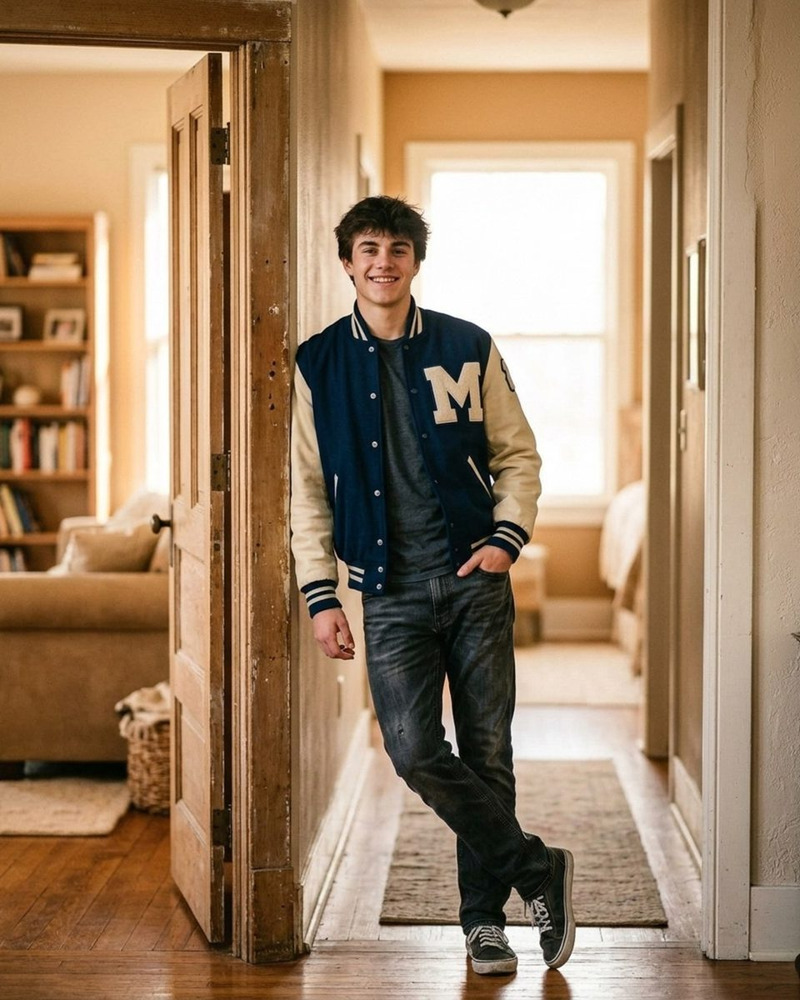
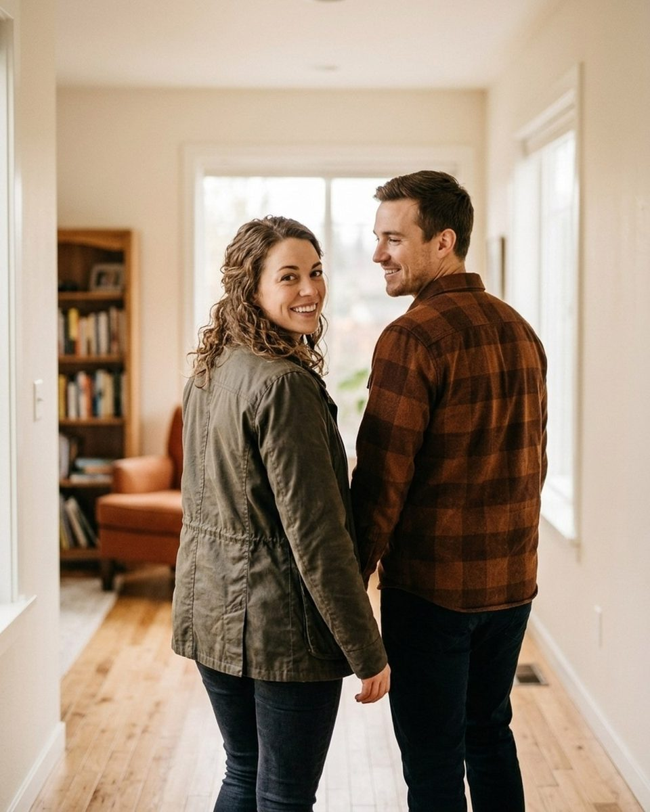
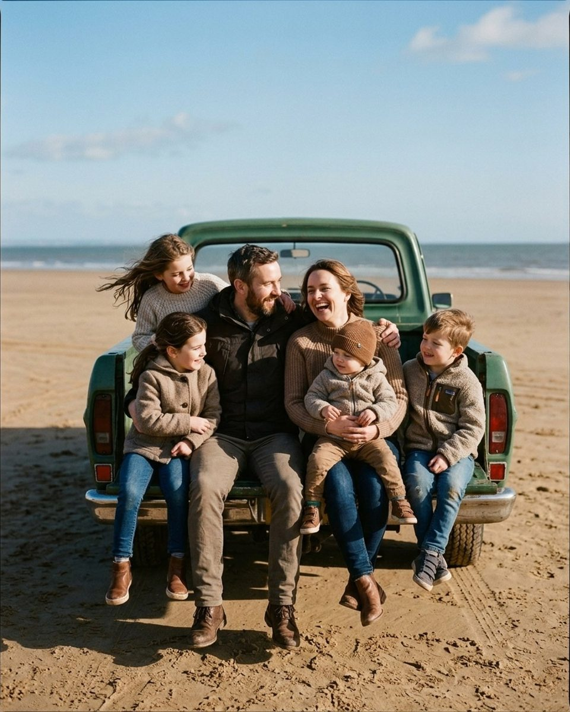

What to say when a client wants to look thinner
The craft answer and the words that go with it, for the client who asks you to make them look thin — every prompt quoted straight from the Prompted catalog.
It usually arrives in the first two minutes, while they are still putting their bag down, and it usually arrives as a joke: just make me look thin. Sometimes it is "I’m not photogenic," sometimes it is "my arms," sometimes it is three photographs of somebody else’s session sent over with a note saying something like this, but you know. Whatever words they use, they are telling you two things at once. The first is a request about angles, which you can do something about. The second is an admission that they are dreading the next hour, which is the more important half and the one most of us answer badly, usually by saying "you look great" and moving on. That does not help, because they did not ask for an opinion. They asked for a plan.
So have one. There is a real craft answer here that involves lying to nobody: a three-quarter turn instead of a square stance, a gap of daylight between the upper arm and the ribs, weight settled on the back foot, something solid to lean into, the chin carried forward rather than lifted, and a camera held at chest height or a little above rather than down at their hip. None of that changes a body. It changes where the edges of it fall in a two-dimensional frame, which is the only thing a photograph was ever reporting on. The other half of the answer is verbal, and it is what most of this guide is about: the prompts that get someone to stop monitoring their own outline, because a person checking their silhouette looks like a person checking their silhouette, and no angle fixes that.
Every prompt below is quoted word for word from the Prompted catalog, with the pose it belongs to. The poses are taken from the set the catalog tags plus-size flattering, which you can filter to in the app the night before rather than trying to recall on the day. The reference images here are AI-generated posing references rather than real session frames; real galleries are being added through the contributor program as photographers submit their own work.
Answer the sentence, then get to work
The worst thing you can do with just make me look thin is treat it as small talk. The best thing you can do is answer it in one short true sentence and then start working, because the fastest way to prove you heard them is to be visibly competent for the next ten minutes.
What you should not do is argue with them about their body. You will not win that, you are not qualified to hold that conversation, and trying turns the first five minutes into a negotiation about whether their self-assessment is accurate. Answer the fear instead. The fear is usually three specific things: that there will be bad frames, that they will not know what to do with themselves, and that the whole hour will be exposing. All three can honestly be taken off the table.
My job is deleting the bad ones. You'll never see them.
Nervous clientFrom the pose “Crossed arms grin”
Say this in the first minute, as soon as someone tells you they photograph badly. It is a promise about your edit rather than a compliment, which is why it lands: the frames they are afraid of are frames nobody will ever see. Only say it if it is true of how you deliver.
There's no wrong way to do this. Stand close and I'll do the rest.
Nervous clientFrom the pose “Nose to nose”
Use this when a client asks what they are supposed to be doing with their body and you have not finished setting up. It moves responsibility for the shape of the frame from them to you, where it belongs, and it buys you the half minute you need.
This isn't picture day. There's no line behind you.
Nervous clientFrom the pose “Stair perch urban”
Good for the client who is rushing, apologising and treating the session as an ordeal to get through. School photographs are where a lot of adults first learned to dread a camera, and naming that lightly tends to slow them down.
Tell me about your weekend while I sort out my settings.
Nervous clientFrom the pose “Doorway frame”
A deflection to use while you are genuinely adjusting something. They get a question with an easy answer, their face stops arranging itself, and you get two or three frames of a person talking instead of posing. Ask about something they will actually want to talk about.
The shapes that do most of the work
Now the mechanics. Nearly everything that reads as flattering in a portrait comes down to separation and angle: separation between arm and torso so the body has an outline rather than a block, and an angle so the camera sees depth instead of width. There is no trick in it. It is the same reason a chair looks narrower from the corner than from the front.
The poses in this section build that in rather than leaving it to chance. The doorway frame turns the subject’s side into the frame, crosses one ankle over the other and sends the near hand into a pocket, so the arm is held off the body without anyone having to be told to hold their arm off their body. The rail lean does the same with a waist-high railing taking the weight. The stair perch seats them angled away from the lens with one hand planted behind, which lengthens the whole line of the body and is considerably more comfortable than standing for a client who does not want to be stood up and looked at. Shoot from their eye level or slightly above, never from below.
Drop your shoulders and let your arms hang heavy.
CalmFrom the pose “Doorway frame”
The single most useful line in this guide. Raised shoulders shorten the neck and widen the top of the frame, and almost everyone raises them the moment a lens comes up. Letting the arms hang heavy drops that whole top line, and it reads immediately.
Slow your walk to half speed and let your eyes wander.
CalmFrom the pose “Rail lean urban”
Use it on any walking or leaning setup where the subject is moving stiffly. Half speed keeps the weight settled over one foot instead of bouncing between both, which gives you a clean waist and a line in the leg rather than a mid-stride wobble.
Watch the traffic go by like it's a movie.
CalmFrom the pose “Stair perch urban”
Say this once they are seated and angled on a step or low wall. Giving the eyes somewhere specific to go takes their attention off their own outline, and the slight turn of the head toward the traffic is itself the flattering part.
Turn your face until you feel the sun on your cheek. Stop there.
CalmFrom the pose “Crossed arms grin”
A direction about the face that doubles as a lighting cue. They find the light themselves, and once the face is a few degrees off the lens the jaw reads as a line rather than a width. Works in open shade as well as in sun.
The dress does most of the work. You just breathe.
Nervous clientFrom the pose “Wildflower crown”
For the client who is dressed for the session and still sure the clothes are the problem. It hands the credit to the outfit they already chose, which is a kinder answer than a compliment about their body, and the instruction to breathe drops the shoulders while it does it.
Give them a job instead of a look
Reassurance has a short half-life. Ten minutes in, the client who asked to look thin goes back to monitoring themselves unless you keep handing them something else to do, and the something else has to be a task rather than a mood. Look confident is not a task. Strutting at the camera is a task, and it produces confident posture as a by-product, because that is what strutting is.
This is where the playful prompts earn their keep, including with adults who told you at the start that they hate having their photo taken. A silly instruction is easier to follow than a flattering one, because nobody can fail at silly. What you get is a frame of a person doing something, and a person doing something is almost never thinking about their arms.

Strut at me like the hallway is yours. Because it is.
PlayfulFrom the pose “Crossed arms grin”
Use it on a walk toward the lens, down a path or a hallway. Strutting puts the weight over one foot, pulls the shoulders back and lengthens the spine, which is the entire posture checklist delivered as a dare instead of a correction.
Look over your shoulder like I owe you money.
PlayfulFrom the pose “Rail lean urban”
Good for a rail or wall lean when the expression has gone flat. The over-the-shoulder turn is one of the most forgiving angles there is, because the camera gets the narrowest view of the torso and the whole face at the same time.
Show me your yearbook smile — now show me the real one.
PlayfulFrom the pose “Stair perch urban”
Best with a teenager or a senior, though it works on any adult who remembers school photographs. You get the stiff version first, they hear for themselves how stiff it was, and the real one follows within a second or two. Shoot both.
Do the smallest possible dance move you can get away with.
PlayfulFrom the pose “Sunset silhouette”
A low-risk request for the client who will not do anything that feels like performing. Permission to do the smallest possible version means they cannot get it wrong, and what usually arrives is a bigger move than you asked for with a real laugh attached.
When one person in the group asked
At a family or couples session the request often comes quietly, from one person, out of earshot of the others: the mother who booked the session and does not want to be in it, the partner who agreed to this as a favour. Posing them separately to solve it backfires, because being singled out for special handling is close to what they were afraid of. Arrange the whole group in a way that happens to serve them, and say nothing about it.
Three things reliably help. Put something or someone in front of them: a child on a hip, a tailgate, a railing, another body. Angle the group inward so nobody is square to the lens. And give them a job that uses their arms, because held arms sit away from the torso and busy arms stop being the thing they are thinking about. A back view with a look over the shoulder, like the one below, does all three at once.

Look at their ear. I know it sounds strange. Trust me.
Nervous clientFrom the pose “Arm swing stroll”
Say it to the self-conscious partner in a couple, quietly, once they are already in position. It gives the eyes a specific target a few inches off the other person’s face, which stops the glancing at your lens, and it is odd enough to earn a small laugh on its own.
Stay quiet together. Quiet looks incredible on you two.
CalmFrom the pose “Look back over shoulder home”
For a couple who have gone quiet and self-aware at the same time. It reframes the quiet as the thing you wanted rather than a failure to perform, and a back-to-camera setup with a turn of the head is among the most forgiving arrangements in the catalog.
Let the kids get heavy in your arms. Heavy is the picture.
CalmFrom the pose “Jump together”
Use it with the parent who is holding themselves rigid. Letting a child’s weight land on them changes the whole posture, the hips shift, the arms engage, the face softens toward the kid, and none of it can be monitored and faked at the same time.

One quiet minute, all together. I'll take care of the rest.
CalmFrom the pose “Tailgate sit beach”
A closing line for a group that has been working hard. Everybody gets to stop performing, the cluster pulls in tight so no single body is isolated in the frame, and the person who asked to look thin is now one of six people in a photograph about the six of them.
What not to say, and what not to promise
Three things to keep out of your mouth. Do not say suck it in, which is unkind and useless at once, since held breath reads as tension in the shoulders and the jaw. Do not reflexively say you look great to someone who has just told you they do not; it is heard as a polite contradiction, and it closes the conversation you wanted to have. And do not promise to slim anybody in post unless that is genuinely how you edit and you are willing to say so out loud, because a promise you quietly do not keep is worse than the honest version.
The honest version is specific and sufficient: you will choose the poses, you will shoot from a height that works, you will cull before they ever see a gallery, and if there is a frame they cannot stand they can say so and it goes. Say that in the first five minutes, which is where the tone of the session gets set anyway — see what to say in the first five minutes of any session — and then spend the rest of the hour giving them things to do. For somebody who flatly does not want to be photographed at all, the same approach runs through what to say to a dad who hates having his photo taken; for a client whose body is changing week to week, maternity prompts that respect the client covers the wording that keeps a session from becoming a conversation about size.
The Fall Mini Session Shot List
About 25 poses grouped by family size, each with the words to say. A free PDF, sent once you confirm your address.
One email to confirm, one with the PDF. Unsubscribe any time. No selling, no sharing.
Every prompt in this guide is in the app, with the pose it belongs to.
Prompted is the posing app that is only a posing app: 250+ poses, each with word-for-word prompts in four tones, filtered to the light you're standing in. The sun tracker is free forever.
Get Prompted on the App Store